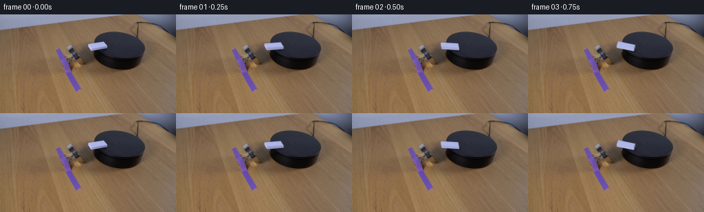
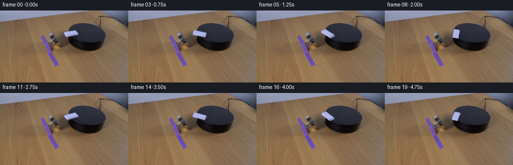

CODING AGENTS AS PIXEL WORLD MODELS
traex/GPT-6.1-Sol · 0094
点击播放 · 原生 RGB 像素
逐轮保存的候选
回放视频、检查图与代码变化。
每份候选均可单独播放。实际图片检查记录在下方工具轨迹中。
候选 01播放与检查图
点击播放 · 原生 RGB 像素

展开代码变化
--- 上一保存版本
+++ 本次保存版本
@@ -0,0 +1,218 @@
+from pathlib import Path
+import math
+import numpy as np
+from PIL import Image
+import cv2
+from scipy.ndimage import gaussian_filter, map_coordinates
+import artifact_io
+
+ROOT = Path(__file__).resolve().parent
+H, W = 144, 256
+S = 4
+
+# An orthographic plane calibration obtained from the round upper surface.
+# The two columns are the original domino's horizontal unit directions.
+L, B, HEIGHT = 26.3, 11.7, 3.55
+P = np.array([[22.6/L, 5.15/B], [-3.78/L, 5.95/B]])
+CENTER = np.array([142.02, 47.64])
+CX, CY, EA, EB, ET = 173.5825, 44.9282, 37.0823, 19.2771, .170663
+rng = np.random.default_rng(394)
+
+
+def top_radius(x, y):
+ dx, dy = x-CX, y-CY
+ return ((np.cos(ET)*dx+np.sin(ET)*dy)/EA)**2 + ((-np.sin(ET)*dx+np.cos(ET)*dy)/EB)**2
+
+
+def top_points(theta, z=HEIGHT):
+ co, si = np.cos(theta), np.sin(theta)
+ R = np.array([[co,-si],[si,co]])
+ local = np.array([[-L/2,-B/2], [L/2,-B/2], [L/2,B/2], [-L/2,B/2]])
+ return local @ R.T @ P.T + CENTER - [0,z]
+
+
+def polygon_mask(points, blur=0):
+ m = np.zeros((H*S,W*S), np.float32)
+ cv2.fillConvexPoly(m, np.round((np.asarray(points)+.5)*S).astype(np.int32), 1., lineType=cv2.LINE_AA)
+ if blur:
+ m=gaussian_filter(m,blur*S)
+ return m
+
+
+def down(a):
+ return cv2.resize(a,(W,H),interpolation=cv2.INTER_AREA)
+
+
+def make_plate(src):
+ # Restore only the little patch hidden by the moving block, leaving the
+ # table, magnet, cylinder and all the photographic background untouched.
+ yy,xx = np.mgrid[:H*S,:W*S].astype(np.float32)
+ xx=(xx+.5)/S-.5; yy=(yy+.5)/S-.5
+ rtop=top_radius(xx,yy)
+ # A short vertical cylinder side is the union of translated upper disks.
+ rside=np.minimum.reduce([top_radius(xx,yy-z) for z in np.linspace(0,16,33)])
+ tcov=np.clip((1-rtop)*18+.5,0,1)
+ scov=np.clip((1-rside)*18+.5,0,1)
+
+ # Row-wise measured wood shading around the old object, with real local grain.
+ tab = np.median(src[:,119:127].astype(float),axis=1)
+ tab=gaussian_filter(tab,(.65,0))
+ yi=np.clip(np.floor(yy+.5).astype(int),0,H-1)
+ wood=tab[yi] + (xx-124)[...,None]*np.array([-.17,-.035,.10])
+ noise=rng.normal(0,1.45,(H,W,3)).astype(np.float32)
+ noisehi=cv2.resize(noise,(W*S,H*S),interpolation=cv2.INTER_LINEAR)
+ wood+=noisehi
+ # Fit the very slightly colored matte top from the untouched surface.
+ y,x=np.mgrid[:H,:W]
+ fit=(top_radius(x,y)<.82)&((x>160)|(y<38))
+ fit&=(y<60)
+ X=np.stack([np.ones_like(x),(x-173)/40,(y-44)/20,((y-44)/20)**2],axis=-1)
+ coeff=np.linalg.lstsq(X[fit],src.astype(float)[fit],rcond=None)[0]
+ Xh=np.stack([np.ones_like(xx),(xx-173)/40,(yy-44)/20,((yy-44)/20)**2],axis=-1)
+ top=Xh@coeff+noisehi*.52
+ # Left silhouette of the elevated cylinder; the side has a gently lit edge.
+ dys=yy-CY
+ # Min distance to the left outline, which is virtually vertical here.
+ edge=np.exp(-np.maximum(xx-136.85,0)/1.05)
+ side=np.zeros_like(top)+np.array([14.,12.4,13.1])
+ side+=edge[...,None]*np.array([23.,15.,8.])
+ side+=noisehi*.45
+ field=wood*(1-scov[...,None])+side*scov[...,None]
+ field=field*(1-tcov[...,None])+top*tcov[...,None]
+ field=down(field)
+
+ outline=np.array([[127.35,42.55],[150.85,38.98],[156.4,45.45],[156.1,48.8],[133.1,53.0],[131.3,52.5],[127.75,46.9]])
+ clean=polygon_mask(outline)
+ clean=cv2.dilate(clean,np.ones((11,11),np.uint8))
+ clean=gaussian_filter(clean,.27*S)
+ # The old diffuse cast shadow is also removed on the upper surface.
+ shadow=polygon_mask([[135,47],[155,46],[159,55],[154,59],[143,56]],1.05)
+ shadow*=tcov
+ clean=np.maximum(clean,shadow)
+ clean=down(clean)
+ # In the small top patch, fully reconstruct the occluded surface and shadow.
+ ya,xa=np.mgrid[:H,:W]
+ top_patch=((xa>=137)&(xa<=156)&(ya>=40)&(ya<=57)&(top_radius(xa,ya)<1)).astype(float)
+ clean=np.maximum(clean,top_patch)
+ plate=src.astype(float)*(1-clean[...,None])+field*clean[...,None]
+ return plate.astype(np.float32)
+
+
+def texture_from_photo(src):
+ # Interior samples of the horizontal white plastic face are reused, rather
+ # than introducing sharp synthetic markings that are absent in the photograph.
+ p=top_points(0)
+ v,u=np.mgrid[0:40,0:100].astype(float)
+ u=(u+.5)/100; v=(v+.5)/40
+ u=np.clip(u,.065,.94);v=np.clip(v,.20,.74)
+ q=p[0]+u[...,None]*(p[1]-p[0])+v[...,None]*(p[3]-p[0])
+ tex=np.stack([map_coordinates(src[...,c].astype(float),[q[...,1],q[...,0]],order=1,mode='nearest') for c in range(3)],axis=-1)
+ # Remove the hint of edge antialiasing from the texture samples.
+ med=np.median(tex.reshape(-1,3),axis=0)
+ tex=np.maximum(tex,med-5)
+ tex=np.minimum(tex,med+5)
+ return tex.astype(np.float32)
+
+
+def render(src,plate,tex,angle):
+ top=top_points(angle)
+ bottom=top_points(angle,0)
+ yy,xx=np.mgrid[:H*S,:W*S].astype(np.float32)
+ xx=(xx+.5)/S-.5; yy=(yy+.5)/S-.5
+ tc=np.clip((1-top_radius(xx,yy))*18+.5,0,1)
+ # Soft contact and directional cast shadows remain attached to the block.
+ broad=polygon_mask(bottom+[2.1,2.65],1.10)
+ near=polygon_mask(bottom+[.35,.5],.38)
+ shadow=np.minimum(.49,broad*.28+near*.26)*tc
+ bg=cv2.resize(plate,(W*S,H*S),interpolation=cv2.INTER_LINEAR)
+ bg*=1-shadow[...,None]
+ layer=np.zeros_like(bg); coverage=np.zeros((H*S,W*S),np.float32)
+ co,si=np.cos(angle),np.sin(angle)
+ rot=np.array([[co,-si],[si,co]])
+ light=np.array([-.84,.24])
+
+ # Draw only the front-facing vertical faces, from back to front.
+ edges=[]
+ normals=[np.array([0,-1]),np.array([1,0]),np.array([0,1]),np.array([-1,0])]
+ for i in range(4):
+ j=(i+1)%4
+ a,b=top[i],top[j]
+ # Positive winding: the edges directed left expose their vertical faces.
+ if (b[0]-a[0])<0:
+ edges.append((float((a[1]+b[1])/2),i,j))
+ for _,i,j in sorted(edges):
+ m=polygon_mask([top[i],top[j],bottom[j],bottom[i]])
+ norm=rot@normals[i]
+ lit=float(norm@light)
+ color=np.array([126.,130.,171.])+74*lit
+ color=np.maximum(color,np.array([108.,112.,150.]))
+ if i in (1,3):color+=np.array([4.,3.,9.])
+ # The shallow molded edge brightens a little at the upper boundary.
+ edgev=top[j]-top[i]
+ relx=xx-top[i,0];rely=yy-top[i,1]
+ d=(edgev[0]*rely-edgev[1]*relx)/(np.linalg.norm(edgev)+1e-6)
+ bevel=np.exp(-np.abs(d)/.30)*4.0
+ micro=.7*np.sin(xx*4.13+yy*7.21)
+ col=color+bevel[...,None]+micro[...,None]
+ layer=layer*(1-m[...,None])+col*m[...,None]
+ coverage=np.maximum(coverage,m)
+
+ # Rounded horizontal face. The small radius belongs to the molded plastic.
+ A=np.column_stack([top[1]-top[0],top[3]-top[0]])
+ inv=np.linalg.inv(A)
+ u=inv[0,0]*(xx-top[0,0])+inv[0,1]*(yy-top[0,1])
+ v=inv[1,0]*(xx-top[0,0])+inv[1,1]*(yy-top[0,1])
+ localx=(u-.5)*L;localy=(v-.5)*B
+ rad=.48
+ qx=np.abs(localx)-(L/2-rad); qy=np.abs(localy)-(B/2-rad)
+ signed=np.minimum(np.maximum(qx,qy),0)+np.sqrt(np.maximum(qx,0)**2+np.maximum(qy,0)**2)-rad
+ m=np.clip(.5-signed*S*.55,0,1)
+ ct=np.stack([map_coordinates(tex[...,c],[np.clip(v,0,1)*39,np.clip(u,0,1)*99],order=1,mode='nearest') for c in range(3)],axis=-1)
+ # Subpixel bevel and diffuse highlights; the top normal stays horizontal.
+ edge_distance=np.minimum.reduce([u*L,(1-u)*L,v*B,(1-v)*B])
+ glow=np.exp(-np.maximum(edge_distance,0)/.35)
+ ct+=glow[...,None]*np.array([6.,4.,3.])
+ layer=layer*(1-m[...,None])+ct*m[...,None]
+ coverage=np.maximum(coverage,m)
+ # Antialias in linear image space, with the same mild optical softness as
+ # the source. Premultiplied color avoids dark fringes at the silhouette.
+ premult=layer*coverage[...,None]
+ premult=gaussian_filter(premult,(.22*S,.22*S,0))
+ cov=gaussian_filter(coverage,.22*S)
+ out=down(bg*(1-cov[...,None])+premult)
+ # Restrict all resampling to the moving element and its immediate shadow.
+ influence=down(np.maximum(cov,shadow/.49))
+ influence=np.clip(influence*6,0,1)
+ output=plate*(1-influence[...,None])+out*influence[...,None]
+ return np.clip(output,0,255)
+
+
+def main():
+ src=np.array(Image.open(ROOT/'first_frame.png').convert('RGB'))
+ plate=make_plate(src)
+ tex=texture_from_photo(src)
+ start=render(src,plate,tex,0)
+ # Retain small source-specific edge residuals during the first fraction of
+ # a second. The first saved frame itself is the untouched input array.
+ frames=[src.copy()]
+ for i in range(1,20):
+ t=i/4
+ theta=math.radians(68)*(t-.20*(1-math.exp(-t/.20)))
+ frame=render(src,plate,tex,theta)
+ if i<=2:
+ # Any initial photographic mismatch is carried with the moving
+ # object, not left behind as a static ghost.
+ T=P@np.array([[math.cos(theta),-math.sin(theta)],[math.sin(theta),math.cos(theta)]])@np.linalg.inv(P)
+ origin=CENTER-np.array([0,HEIGHT/2])
+ affine=np.column_stack([T,origin-T@origin]).astype(np.float32)
+ residual=cv2.warpAffine(src.astype(np.float32)-start.astype(np.float32),affine,(W,H),flags=cv2.INTER_LINEAR)
+ frame+=residual*math.exp(-t/.21)
+ frames.append(np.rint(np.clip(frame,0,255)).astype(np.uint8))
+ frames=np.stack(frames)
+ np.save(ROOT/'.tmp'/'candidate.npy',frames)
+ Image.fromarray(np.clip(plate,0,255).astype(np.uint8)).save(ROOT/'.tmp'/'plate.png')
+ Image.fromarray(np.clip(start,0,255).astype(np.uint8)).save(ROOT/'.tmp'/'start_render.png')
+ artifact_io.save(frames,ROOT)
+
+if __name__=='__main__':
+ main()
候选 02播放与检查图
点击播放 · 原生 RGB 像素

展开代码变化
--- 上一保存版本
+++ 本次保存版本
@@ -154,6 +154,13 @@
bevel=np.exp(-np.abs(d)/.30)*4.0
micro=.7*np.sin(xx*4.13+yy*7.21)
col=color+bevel[...,None]+micro[...,None]
+ if i in (0,2):
+ # A soft molded shoulder, and the low warm bounce light from the
+ # tabletop. Both are present on the original shallow long side.
+ along=np.clip((np.maximum(top[i,0],top[j,0])-xx)/(abs(edgev[0])+1e-6),0,1)
+ col=col-np.array([6.,9.,7.])+(along[...,None]-.5)*np.array([30.,22.,20.])
+ shoulder=np.exp(-(np.abs(d)/.86)**2)
+ col=col*(1-shoulder[...,None])+np.array([172.,181.,232.])*shoulder[...,None]
layer=layer*(1-m[...,None])+col*m[...,None]
coverage=np.maximum(coverage,m)
可观测工具轨迹
实际执行的命令与返回图片。
命令 1exit 0
/bin/bash -lc 'ls -la && cat prompt.txt && cat GENERATION_RULES.md'
命令 2exit 0
/bin/bash -lc "cat artifact_io.py && python - <<'PY'
from PIL import Image
import numpy as np
im=np.array(Image.open('first_frame.png'))
print(im.shape)
im=im[:,:,:3]
print('range',im.min(0).min(0),im.max(0).max(0))
# ANSI not visual use ascii brightness blocks
small=np.array(Image.fromarray(im).resize((128,72)))
chars=' .:-=+*#%@'
for row in small:
print(''.join(chars[int(v.mean())*9//256] for v in row))
PY"命令 3exit 0
/bin/bash -lc "python - <<'PY'
from PIL import Image
import numpy as np
im=np.asarray(Image.open('first_frame.png'))
# coords ranges
for y in range(30,84):
row=im[y,80:215]
ch=' .,:;irsXA253hMHGS#9B&@'
print(f'{y:3} '+''.join(ch[min(len(ch)-1,int(v.mean())*(len(ch)-1)//201)] for v in row))
print('every 4 pixel RGB')
for y in range(38,70,4):
print(y,[(x,tuple(im[y,x])) for x in range(86,156,4)])
PY"命令 4exit 0
/bin/bash -lc "python - <<'PY'
import numpy as np
from PIL import Image
im=np.array(Image.open('first_frame.png'))
print('x '+''.join(str(x//10%10) for x in range(118,163)))
print(' '+''.join(str(x%10) for x in range(118,163)))
for y in range(32,59):
s=''
for r,g,b in im[y,118:163].astype(int):
if r>160 and g>165 and b>205:c='W'
elif r>165 and b>200:c='E'
elif b>r+25 and r>90:c='s'
elif b>r+15 and r>75:c='e'
elif r>g+12:c='t'
elif r<30:c=' '
elif r<60:c='.'
elif r<100:c=':'
elif r<140:c='o'
else:c='S'
s+=c
print(f'{y:02} {s}')
# coordinates per row associated block
for y in range(38,56):
print(y,[(x,list(im[y,x])) for x in range(127,157)])
PY"命令 5exit 0
/bin/bash -lc "python - <<'PY'
from PIL import Image
import numpy as np
im=np.asarray(Image.open('first_frame.png')).astype(float)
for y in range(23,83):
mask=(im[y,:,0]<70)&(im[y,:,2]>im[y,:,0]+4)
xs=np.flatnonzero(mask & (np.arange(256)>125) & (np.arange(256)<220))
if len(xs):
print(y,xs.min(),xs.max(), 'x136-161:', ['/'.join(map(str,im[y,x].astype(int))) for x in [135,136,137,138,140,145,150,155,160,165,170,175,180]])
PY"命令 6exit 0
/bin/bash -lc "python - <<'PY' import importlib.util for m in ['cv2','scipy','PIL']: print(m, bool(importlib.util.find_spec(m))) PY"
命令 7exit 0
/bin/bash -lc "python - <<'PY'
import numpy as np
from PIL import Image
im=np.array(Image.open('first_frame.png'))
print(' '+''.join(str(x//10%10) for x in range(125,218)))
print(' '+''.join(str(x%10) for x in range(125,218)))
for y in range(22,85):
print('%3d '%y+''.join('W' if v[0]>150 and v[2]>190 else 't' if int(v[0])-int(v[1])>12 else '@' if v.mean()<14 else '#' if v.mean()<24 else 'o' if v.mean()<35 else '+' if v.mean()<55 else ':' if v.mean()<85 else '.' for v in im[y,125:218]))
PY"命令 8exit 0
/bin/bash -lc "cat > .tmp/analyze.py <<'PY'
import numpy as np
from PIL import Image
from scipy.optimize import least_squares
im=np.asarray(Image.open('first_frame.png')).astype(float)
pts=[]
for y in range(26,61):
d=im[y,:,0]-im[y,:,1]
if y<40:
for x in range(132,180):
if d[x]>6 and d[x+1]<=6:
pts.append([x+(d[x]-6)/(d[x]-d[x+1]),y]);break
for x in range(175,216):
if d[x]<=6 and d[x+1]>6:
pts.append([x+(6-d[x])/(d[x+1]-d[x]),y]);break
pts=np.array(pts)
def fun(q):
cx,cy,a,b,t=q
x,y=(pts-[cx,cy]).T
xx=np.cos(t)*x+np.sin(t)*y; yy=-np.sin(t)*x+np.cos(t)*y
return (xx/a)**2+(yy/b)**2-1
r=least_squares(fun,[174,44.5,40,18,.36])
print('ellipse',r.x,'rmserror',np.std(r.fun))
print(pts.tolist())
PY
python .tmp/analyze.py"命令 9exit 1
/bin/bash -lc "python - <<'PY' import numpy as np cx,cy,a,b,t=173.582502,44.92821,37.08227,19.2771,.170663 for y in range(39,66): x=np.arange(120,220,.05);u=x-cx;v=y-cy r=((np.cos(t)*u+np.sin(t)*v)/a)**2+((-np.sin(t)*u+np.cos(t)*v)/b)**2 z=x[r<1] print(y,round(z.min(),1),round(z.max(),1)) PY"
命令 10exit 0
/bin/bash -lc "python - <<'PY' import numpy as np p=.170663;f=.519845 M=np.array([[np.cos(p),-f*np.sin(p)],[np.sin(p),f*np.cos(p)]]) A=np.linalg.inv(M) for v in [[22.1,-3.8],[4.2,6.5],[23,-4],[5,6],[4,6]]: print(v,A@v,np.linalg.norm(A@v), np.degrees(np.arctan2(*(A@v)[::-1]))) PY"
命令 11exit 0
/bin/bash -lc "cat > generate.py <<'PY'
from pathlib import Path
import math
import numpy as np
from PIL import Image
import cv2
from scipy.ndimage import gaussian_filter, map_coordinates
import artifact_io
ROOT = Path(__file__).resolve().parent
H, W = 144, 256
S = 4
# An orthographic plane calibration obtained from the round upper surface.
# The two columns are the original domino's horizontal unit directions.
L, B, HEIGHT = 26.3, 11.7, 3.55
P = np.array([[22.6/L, 5.15/B], [-3.78/L, 5.95/B]])
CENTER = np.array([142.02, 47.64])
CX, CY, EA, EB, ET = 173.5825, 44.9282, 37.0823, 19.2771, .170663
rng = np.random.default_rng(394)
def top_radius(x, y):
dx, dy = x-CX, y-CY
return ((np.cos(ET)*dx+np.sin(ET)*dy)/EA)**2 + ((-np.sin(ET)*dx+np.cos(ET)*dy)/EB)**2
def top_points(theta, z=HEIGHT):
co, si = np.cos(theta), np.sin(theta)
R = np.array([[co,-si],[si,co]])
local = np.array([[-L/2,-B/2], [L/2,-B/2], [L/2,B/2], [-L/2,B/2]])
return local @ R.T @ P.T + CENTER - [0,z]
def polygon_mask(points, blur=0):
m = np.zeros((H*S,W*S), np.float32)
cv2.fillConvexPoly(m, np.round((np.asarray(points)+.5)*S).astype(np.int32), 1., lineType=cv2.LINE_AA)
if blur:
m=gaussian_filter(m,blur*S)
return m
def down(a):
return cv2.resize(a,(W,H),interpolation=cv2.INTER_AREA)
def make_plate(src):
# Restore only the little patch hidden by the moving block, leaving the
# table, magnet, cylinder and all the photographic background untouched.
yy,xx = np.mgrid[:H*S,:W*S].astype(np.float32)
xx=(xx+.5)/S-.5; yy=(yy+.5)/S-.5
rtop=top_radius(xx,yy)
# A short vertical cylinder side is the union of translated upper disks.
rside=np.minimum.reduce([top_radius(xx,yy-z) for z in np.linspace(0,16,33)])
tcov=np.clip((1-rtop)*18+.5,0,1)
scov=np.clip((1-rside)*18+.5,0,1)
# Row-wise measured wood shading around the old object, with real local grain.
tab = np.median(src[:,119:127].astype(float),axis=1)
tab=gaussian_filter(tab,(.65,0))
yi=np.clip(np.floor(yy+.5).astype(int),0,H-1)
wood=tab[yi] + (xx-124)[...,None]*np.array([-.17,-.035,.10])
noise=rng.normal(0,1.45,(H,W,3)).astype(np.float32)
noisehi=cv2.resize(noise,(W*S,H*S),interpolation=cv2.INTER_LINEAR)
wood+=noisehi
# Fit the very slightly colored matte top from the untouched surface.
y,x=np.mgrid[:H,:W]
fit=(top_radius(x,y)<.82)&((x>160)|(y<38))
fit&=(y<60)
X=np.stack([np.ones_like(x),(x-173)/40,(y-44)/20,((y-44)/20)**2],axis=-1)
coeff=np.linalg.lstsq(X[fit],src.astype(float)[fit],rcond=None)[0]
Xh=np.stack([np.ones_like(xx),(xx-173)/40,(yy-44)/20,((yy-44)/20)**2],axis=-1)
top=Xh@coeff+noisehi*.52
# Left silhouette of the elevated cylinder; the side has a gently lit edge.
dys=yy-CY
# Min distance to the left outline, which is virtually vertical here.
edge=np.exp(-np.maximum(xx-136.85,0)/1.05)
side=np.zeros_like(top)+np.array([14.,12.4,13.1])
side+=edge[...,None]*np.array([23.,15.,8.])
side+=noisehi*.45
field=wood*(1-scov[...,None])+side*scov[...,None]
field=field*(1-tcov[...,None])+top*tcov[...,None]
field=down(field)
outline=np.array([[127.35,42.55],[150.85,38.98],[156.4,45.45],[156.1,48.8],[133.1,53.0],[131.3,52.5],[127.75,46.9]])
clean=polygon_mask(outline)
clean=cv2.dilate(clean,np.ones((11,11),np.uint8))
clean=gaussian_filter(clean,.27*S)
# The old diffuse cast shadow is also removed on the upper surface.
shadow=polygon_mask([[135,47],[155,46],[159,55],[154,59],[143,56]],1.05)
shadow*=tcov
clean=np.maximum(clean,shadow)
clean=down(clean)
# In the small top patch, fully reconstruct the occluded surface and shadow.
ya,xa=np.mgrid[:H,:W]
top_patch=((xa>=137)&(xa<=156)&(ya>=40)&(ya<=57)&(top_radius(xa,ya)<1)).astype(float)
clean=np.maximum(clean,top_patch)
plate=src.astype(float)*(1-clean[...,None])+field*clean[...,None]
return plate.astype(np.float32)
def texture_from_photo(src):
# Interior samples of the horizontal white plastic face are reused, rather
# than introducing sharp synthetic markings that are absent in the photograph.
p=top_points(0)
v,u=np.mgrid[0:40,0:100].astype(float)
u=(u+.5)/100; v=(v+.5)/40
u=np.clip(u,.065,.94);v=np.clip(v,.20,.74)
q=p[0]+u[...,None]*(p[1]-p[0])+v[...,None]*(p[3]-p[0])
tex=np.stack([map_coordinates(src[...,c].astype(float),[q[...,1],q[...,0]],order=1,mode='nearest') for c in range(3)],axis=-1)
# Remove the hint of edge antialiasing from the texture samples.
med=np.median(tex.reshape(-1,3),axis=0)
tex=np.maximum(tex,med-5)
tex=np.minimum(tex,med+5)
return tex.astype(np.float32)
def render(src,plate,tex,angle):
top=top_points(angle)
bottom=top_points(angle,0)
yy,xx=np.mgrid[:H*S,:W*S].astype(np.float32)
xx=(xx+.5)/S-.5; yy=(yy+.5)/S-.5
tc=np.clip((1-top_radius(xx,yy))*18+.5,0,1)
# Soft contact and directional cast shadows remain attached to the block.
broad=polygon_mask(bottom+[2.1,2.65],1.10)
near=polygon_mask(bottom+[.35,.5],.38)
shadow=np.minimum(.49,broad*.28+near*.26)*tc
bg=cv2.resize(plate,(W*S,H*S),interpolation=cv2.INTER_LINEAR)
bg*=1-shadow[...,None]
layer=np.zeros_like(bg); coverage=np.zeros((H*S,W*S),np.float32)
co,si=np.cos(angle),np.sin(angle)
rot=np.array([[co,-si],[si,co]])
light=np.array([-.84,.24])
# Draw only the front-facing vertical faces, from back to front.
edges=[]
normals=[np.array([0,-1]),np.array([1,0]),np.array([0,1]),np.array([-1,0])]
for i in range(4):
j=(i+1)%4
a,b=top[i],top[j]
# Positive winding: the edges directed left expose their vertical faces.
if (b[0]-a[0])<0:
edges.append((float((a[1]+b[1])/2),i,j))
for _,i,j in sorted(edges):
m=polygon_mask([top[i],top[j],bottom[j],bottom[i]])
norm=rot@normals[i]
lit=float(norm@light)
color=np.array([126.,130.,171.])+74*lit
color=np.maximum(color,np.array([108.,112.,150.]))
if i in (1,3):color+=np.array([4.,3.,9.])
# The shallow molded edge brightens a little at the upper boundary.
edgev=top[j]-top[i]
relx=xx-top[i,0];rely=yy-top[i,1]
d=(edgev[0]*rely-edgev[1]*relx)/(np.linalg.norm(edgev)+1e-6)
bevel=np.exp(-np.abs(d)/.30)*4.0
micro=.7*np.sin(xx*4.13+yy*7.21)
col=color+bevel[...,None]+micro[...,None]
layer=layer*(1-m[...,None])+col*m[...,None]
coverage=np.maximum(coverage,m)
# Rounded horizontal face. The small radius belongs to the molded plastic.
A=np.column_stack([top[1]-top[0],top[3]-top[0]])
inv=np.linalg.inv(A)
u=inv[0,0]*(xx-top[0,0])+inv[0,1]*(yy-top[0,1])
v=inv[1,0]*(xx-top[0,0])+inv[1,1]*(yy-top[0,1])
localx=(u-.5)*L;localy=(v-.5)*B
rad=.48
qx=np.abs(localx)-(L/2-rad); qy=np.abs(localy)-(B/2-rad)
signed=np.minimum(np.maximum(qx,qy),0)+np.sqrt(np.maximum(qx,0)**2+np.maximum(qy,0)**2)-rad
m=np.clip(.5-signed*S*.55,0,1)
ct=np.stack([map_coordinates(tex[...,c],[np.clip(v,0,1)*39,np.clip(u,0,1)*99],order=1,mode='nearest') for c in range(3)],axis=-1)
# Subpixel bevel and diffuse highlights; the top normal stays horizontal.
edge_distance=np.minimum.reduce([u*L,(1-u)*L,v*B,(1-v)*B])
glow=np.exp(-np.maximum(edge_distance,0)/.35)
ct+=glow[...,None]*np.array([6.,4.,3.])
layer=layer*(1-m[...,None])+ct*m[...,None]
coverage=np.maximum(coverage,m)
# Antialias in linear image space, with the same mild optical softness as
# the source. Premultiplied color avoids dark fringes at the silhouette.
premult=layer*coverage[...,None]
premult=gaussian_filter(premult,(.22*S,.22*S,0))
cov=gaussian_filter(coverage,.22*S)
out=down(bg*(1-cov[...,None])+premult)
# Restrict all resampling to the moving element and its immediate shadow.
influence=down(np.maximum(cov,shadow/.49))
influence=np.clip(influence*6,0,1)
output=plate*(1-influence[...,None])+out*influence[...,None]
return np.clip(output,0,255)
def main():
src=np.array(Image.open(ROOT/'first_frame.png').convert('RGB'))
plate=make_plate(src)
tex=texture_from_photo(src)
start=render(src,plate,tex,0)
# Retain small source-specific edge residuals during the first fraction of
# a second. The first saved frame itself is the untouched input array.
frames=[src.copy()]
for i in range(1,20):
t=i/4
theta=math.radians(68)*(t-.20*(1-math.exp(-t/.20)))
frame=render(src,plate,tex,theta)
if i<=2:
# Any initial photographic mismatch is carried with the moving
# object, not left behind as a static ghost.
T=P@np.array([[math.cos(theta),-math.sin(theta)],[math.sin(theta),math.cos(theta)]])@np.linalg.inv(P)
origin=CENTER-np.array([0,HEIGHT/2])
affine=np.column_stack([T,origin-T@origin]).astype(np.float32)
residual=cv2.warpAffine(src.astype(np.float32)-start.astype(np.float32),affine,(W,H),flags=cv2.INTER_LINEAR)
frame+=residual*math.exp(-t/.21)
frames.append(np.rint(np.clip(frame,0,255)).astype(np.uint8))
frames=np.stack(frames)
np.save(ROOT/'.tmp'/'candidate.npy',frames)
Image.fromarray(np.clip(plate,0,255).astype(np.uint8)).save(ROOT/'.tmp'/'plate.png')
Image.fromarray(np.clip(start,0,255).astype(np.uint8)).save(ROOT/'.tmp'/'start_render.png')
artifact_io.save(frames,ROOT)
if __name__=='__main__':
main()
PY
python generate.py"命令 12exit 0
/bin/bash -lc "python - <<'PY'
import numpy as np
from PIL import Image
f=np.load('.tmp/candidate.npy')
s=np.asarray(Image.open('first_frame.png'))
p=np.asarray(Image.open('.tmp/plate.png'))
r=np.asarray(Image.open('.tmp/start_render.png'))
print('first match',np.array_equal(f[0],s))
print('diff stats',[(i,float(np.mean(np.abs(f[i].astype(float)-s))),np.sum(np.any(f[i]"'!=s,axis=-1))) for i in [1,2,5,10,15,19]])
for i in [0,1,3,6,9,12,15,19]:
print('"'\\n FRAME',i)
for y in range(30,63):
line=''
for pix in f[i,y,118:163].astype(float):
if pix[0]>158 and pix[2]>200:c='W'
elif pix[0]>100 and pix[2]>145:c='s'
elif pix[0]>60 and pix[2]>100:c='e'
elif pix[0]-pix[1]>12:c='t'
elif pix.mean()<15:c='@'
elif pix.mean()<26:c='#'
elif pix.mean()<36:c='o'
elif pix.mean()<59:c='+'
else:c=':'
line+=c
print('%2d '%y+line)
print('initial render diff',np.mean(abs(r.astype(float)-s)), 'MAE object',np.mean(abs(r[39:54,127:157].astype(float)-s[39:54,127:157])))
print('plate region:')
for y in range(37,57):
print(y,' '.join('%3d'%p[y,x,0] for x in range(127,161)))
PY"命令 13exit 0
/bin/bash -lc "python - <<'PY'
import generate
import numpy as np
from PIL import Image
s=np.asarray(Image.open('first_frame.png'))
t=generate.texture_from_photo(s)
print('texture stats',np.percentile(t,[0,5,25,50,75,95,100],axis=(0,1)))
p=np.asarray(Image.open('.tmp/plate.png'));r=np.asarray(Image.open('.tmp/start_render.png'))
for y in range(42,54):
print(y,[(x,tuple(s[y,x]),tuple(r[y,x])) for x in [129,132,136,140,144,148,152,155]])
# all changes bounds; outside area
f=np.load('.tmp/candidate.npy')
ys,xs=np.nonzero(np.any(np.any(f[1:]"'!=f[0],axis=0),axis=-1))
print('"'change bbox',xs.min(),ys.min(),xs.max(),ys.max())
# highest photometric residual
D=np.mean(abs(r.astype(float)-s),axis=-1)
print('max MAE pixels',sorted([(round(D[y,x],1),x,y) for y in range(35,59) for x in range(125,161)],reverse=True)[:20])
PY"命令 14exit 0
/bin/bash -lc "python generate.py && python - <<'PY'
from pathlib import Path
import numpy as np
from PIL import Image
f=np.load('.tmp/candidate.npy')
a=np.load('pixels.npz')['pixels']
print('frames:',f.shape,f.dtype)
print('frame00 identical:',np.array_equal(f[0],np.asarray(Image.open('first_frame.png'))))
print('packed:',a.shape,a.dtype)
print('files:',len(list(Path('frames').glob('*.png'))))
PY"保存候选 2 份；完成命令 14 次；可验证图片返回 0 张。原始 API 响应与完整日志保留在本地。